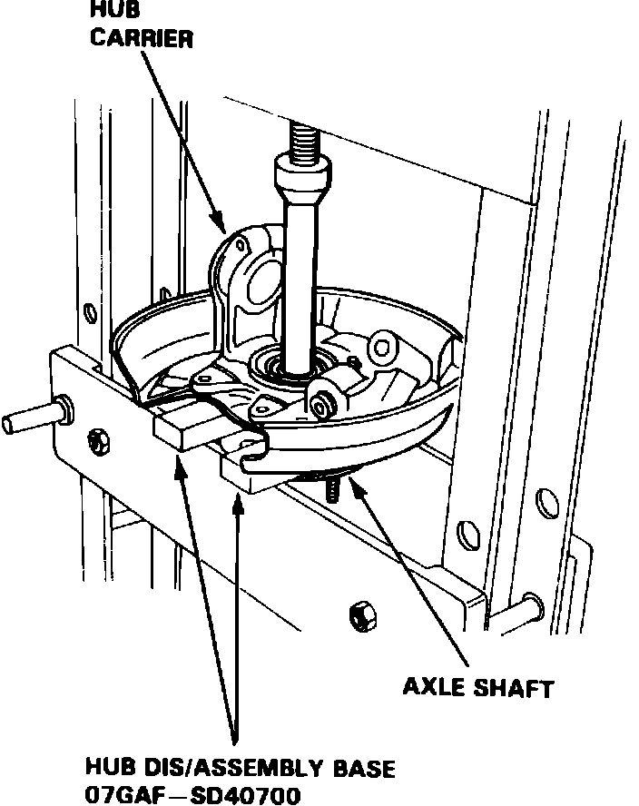
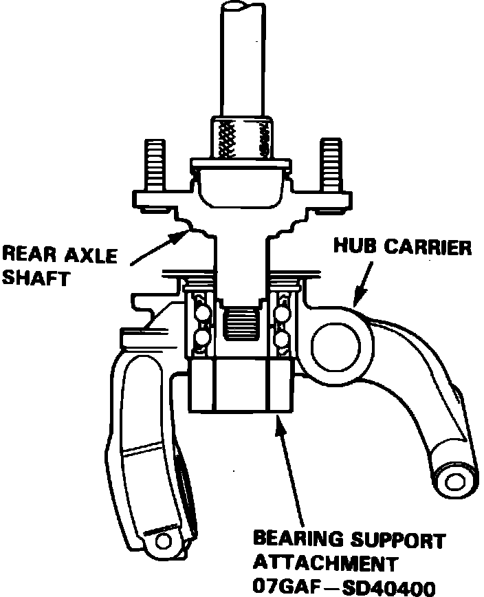

Rear
Fig. 2 Exploded view of rear suspension components. Legend:

1. Remove hub carrier assembly as shown in Fig. 2.
Fig. 3 Exploded view of hub carrier & rear axle shaft. Legend:

2. Remove hub cap and spindle nut, then the splash guard attaching bolts from hub carrier, Fig. 3.
Fig. 4 Hub assembly removal. Legend:

3. Separate hub assembly from hub carrier, Fig. 4.
Fig. 5 Hub assembly installation. Legend:

4. Reverse procedure to install. Press hub assembly into hub carrier as shown, Fig. 5.